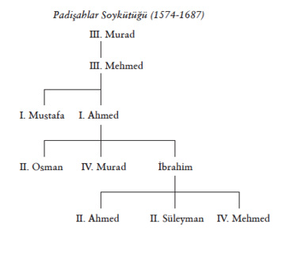
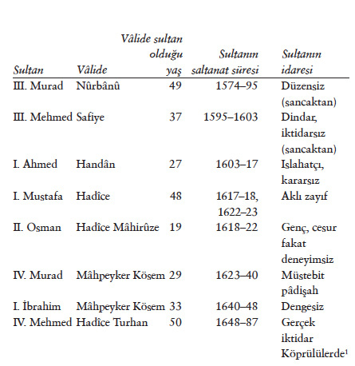

Şehzâdeler
Şerîat’ta ergenlik yaşı 12’dir, bu sıfatla 12 yaşında şehzâde lalalarıyla birlikte sancak idaresine gönderilir. Sancak idaresine gönderilen son şehzâde III. Mehmed’dir (1595–1603). Ondan sonra şehzâdeler, haremde, Kafes denilen dairede hapis tutulmaya başladı. Pâdişah olacak en yaşlı şehzâde Kafes’ten alınarak tahta oturtuluyordu. Kafes’ten tahta çıkan ilk pâdişah, I. Ahmed’dir (1603–1617). Kafes, vâlide sultan ile darussaâde ağasının gözetimi altında idi. O dönemde şehzâde, babası sultanın sağlığında ata binip gezintiye çıkmak, ok atmak, gürz kullanmak gibi savaş sporları yapmakta, avlanmakta serbestti. Dış âlemle temaslarına izin verilmezdi. Şimşirlik’te câriyeleriyle yaşar, kendi hazinesi ve kileri olurdu. Kuyumculuk gibi bir işle uğraşır, vakit geçirirdi. Kargaşa zamanlarında üstünden kilitli bir odaya kapatılırdı (I. Mustafa örneği). Kafes, gerçekte korku ve acı içinde yaşanılan bir hapishanedir. II. Süleyman (1687–1691), IV. Mehmed döneminde 40 yıl kafes hayatından sonra kendisini tahta çıkarmaya götüren ağaya şöyle konuşmuştur: “Kırk yıldır bir karanlık yerde mahbûs ve hayattan me’yûs iken yeniden dünyaya gelip gözüm açtım.” Süleyman kendisini Kafes’ten çıkarıp tahta götürmek için gelen darussaâde ağasına inanmadı: “İzâlemiz emir olundu ise söyle, iki rek’at namaz kılayım, andan emri yerine getir; sabâvetimizden beri 40 yıldır hapis çekeriz; her gün ölmektense bir gün evvel ölmek yeğdir” dedi ve ağlamaya başladı. “Bunca zamandan beri zelîl ve sefîl, üzerinde bir şey yok, ancak arkasında atlas entari ve ayağında tomak” bulunuyordu. Ağa kendi kürklerinden birini giydirdi, koltuğuna girip tahta oturtmak için ‘Arz-Odası’na götürürken hâlâ inanmıyordu; karanlık Arslanhâne’den geçerken “Beni bunda mı öldürürsüz?” diye sızlandı. Ağa, “Behey efendim, niçün böyle buyrursuz, hâşâ ki izâle emrolunmuş ola, tahta oturmağa gidersiz” diye inandırmaya çalıştı, ‘Arz-Odası kapısında Bâbussaâde ağası iç-oğlanlarıyla kendisini karşılamak için hazır durmuşlardı. İşte, XVII. yüzyılda mutlak otorite sahibi pâdişahın düştüğü durum budur.


Dipnot 1: Özellikle N. Sakaoğlu, Bu Mülkün Kadın Sultanları.
On beş yaşında tahta geçen II. Osman, hocası Ömer Efendi ve Darussaâde Ağası Süleyman’ın sözlerinden çıkamamış, yeniçeri ayaklanmasında hayatını kaybetmiştir. On iki yaşında pâdişahlığı ilân olunan IV. Murad, ilk yıllarında Vâlide Kösem Sultan ve yeniçeri ağalarına bağımlı kalmıştı. Yedi yaşında tahta geçen IV. Mehmed de ilkin Büyük Vâlide Kösem Sultan, sonra annesi Turhan Sultan’ın vesâyetinde hüküm sürmüştür.
Hüseyin Hezârfen, ideal pâdişahı belirlerken, pâdişahın mutlak egemenliği elinde tutması gereğini açıklar. XVII. yüzyılda hânedânın talihsizliği, II. Osman dışındaki pâdişahların ya aklen zayıf (I. Mustafa ve I. İbrahim) veya çocuk yaşta tahta geçmiş olmalarıdır. I. Ahmed 13 yaşında, IV. Murad 12 yaşında, IV. Mehmed yedi yaşında tahta çıkmışlardır. Çocuk yaşta oldukları halde Osmanlı hânedânı gereğince, çocuk pâdişahlar gerçekten hüküm sahibi pâdişah olarak tanınıyor ve tüm devlet işlerinde tek muhatap sayılıyordu. Gerçekte, vâlide sultanlar Dîvân kararlarını oğulları çocuk pâdişah adına tasdik etmek, emir vermekle beraber (Ekler, Topkapı Sarayı Arşivi’nden telhîsler ve arz belgeleri) idare bu işlemi, doğrudan doğruya pâdişah emri olarak tanıyordu. Osmanlılarda hukukî bir niyâbet kurumu yoktu. Devlet büyükleri meşveretlerde çocuk pâdişah huzurunda toplanıyor, vâlideler perde arkasında (verâ-i perde) görüşmelere katılıyordu.